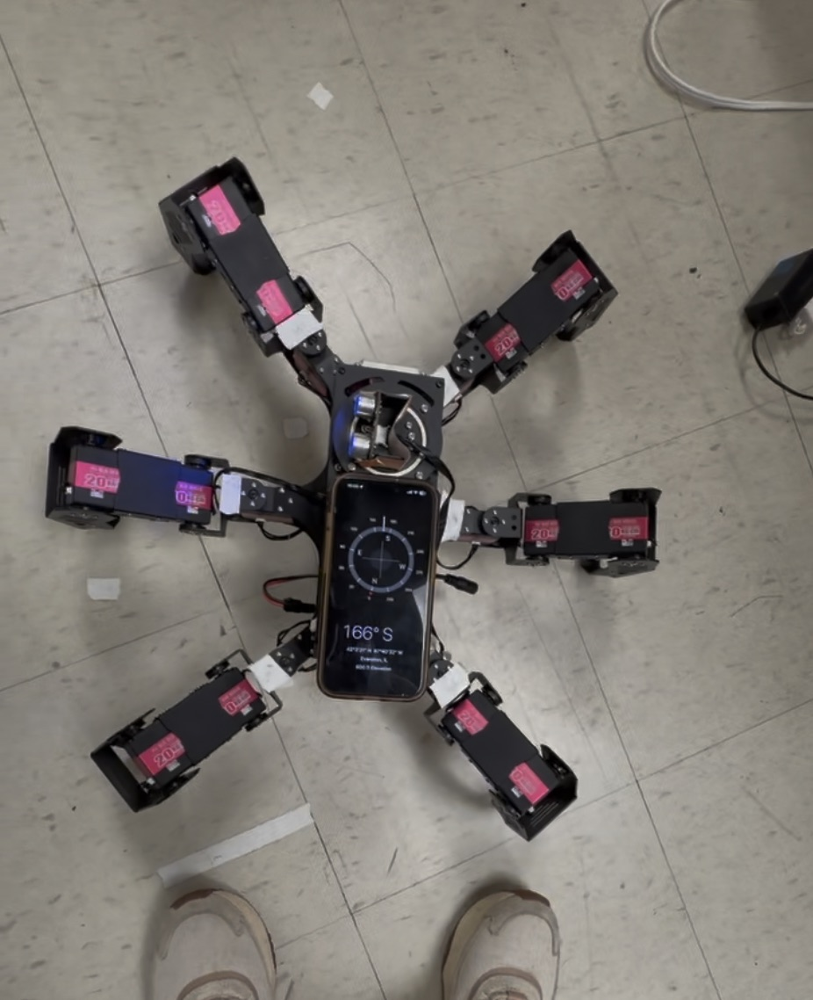

"Our robot drifted left – every time. Manual fixes failed. So we let it learn."
Goal
Eliminate lateral drift in a hexapod's straight-line gait using reinforcement learning, without manual servo tuning
Role
Programmer
Skills
Outcome
A straight heading held across repeated trials with no manual tuning between them
The SpiderPi hexapod consistently veered left due to small mechanical asymmetries, and we couldn't correct it by hand without introducing new errors. The goal was to teach the robot to correct its own drift without manual tuning, using an onboard distance sensor and human-in-the-loop heading measurements.
THE APPROACH
The SpiderPi has six legs and runs a custom tripod gait. Rather than measuring and compensating for each asymmetry in the gait by hand, we framed the problem as a reinforcement learning task. A Q-learning agent observes the robot's yaw drift and selects corrective adjustments to the stride timing. Over training episodes, it learns which adjustments produce the straightest paths: choices that increase drift are penalized, and choices that reduce it are rewarded.
SMALL CAVEAT
We didn't have an IMU, so we measured heading manually. After each stride cycle, the robot paused while we read a compass mounted on top of it and recorded its deviation from north. A distance sensor continuously measured the gap to the wall on the robot's left, giving us a second, automated measure of drift.

RESULTS
After training, the robot's lateral drift dropped from over 32 cm to 12 cm over a 2-meter run. The corrected gait held a straight heading across repeated trials with no manual tuning between them, which hand-tuned compensation had never achieved.